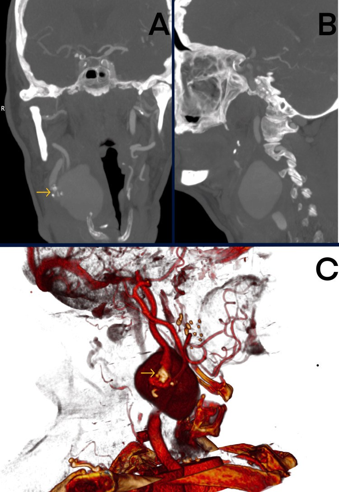
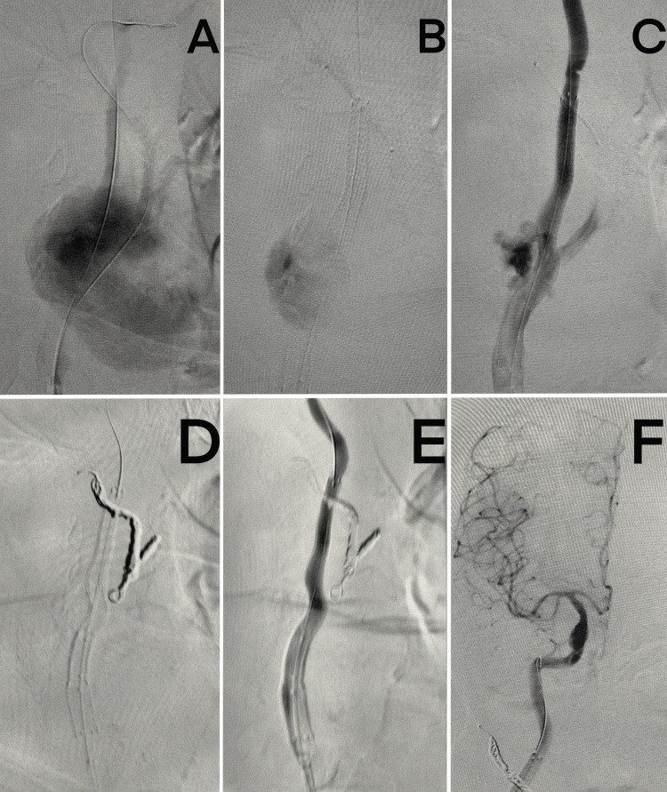
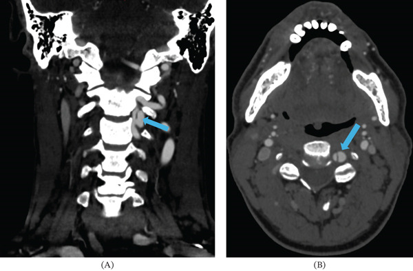

248 — Can thiệp nội mạch giả phình & bóc tách động mạch cổ/đốt sống: stent, coil, chỉ định & theo dõi / Endovascular management of cervical artery pseudoaneurysm & dissection
Tags: pattern:gia-phinh pattern:boc-tach-mach-co pattern:hep-long-mach vung:mach-co score:Denver-BCVI protocol:DSA protocol:CTA-co protocol:khang-ket-tap
Mức chắc chắn (certainty): tổng hợp y văn (literature synthesis) — số liệu từ các nghiên cứu toàn văn mở (PMC12697641, PMC12099200, PMC13284889, PMC12072270, PMC12190707, PMC12282257); các ca trong quiz là ca nguyên văn giữ đúng tuổi – bối cảnh – mô tả hình ảnh gốc.
Câu chốt: không phải mọi giả phình/bóc tách mạch cổ đều cần stent. Can thiệp khi thiếu máu tái diễn dù đã dùng kháng huyết khối, hẹp tiến triển/gây giảm tưới máu, giả phình to ra, vỡ hoặc gây triệu chứng, hoặc không thể dùng kháng đông/kháng kết tập. DSA + đánh giá tuần hoàn bàng hệ là chốt trước khi chọn dựng lại (stent/coil giữ mẹ) hay triệt mạch (coil/embolization).
1. Tổng quan bệnh học – cơ chế hình ảnh (TẠI SAO)
- Bóc tách động mạch cổ (cervical artery dissection, CeAD): rách nội mạc → máu tràn vào lớp áo giữa tạo khối máu tụ trong thành (intramural hematoma) → hẹp lòng mạch, tắc mạch hoặc giả phình. Tổn thương hay gặp ở đoạn cổ cao (ICA đoạn xa, V2–V3) nơi mạch di động và sát xương.
- Giả phình (pseudoaneurysm): rách qua cả lớp áo giữa và áo ngoài, máu được giữ bởi áo ngoài/mô xung quanh — thành mỏng, dòng xoáy, nguy cơ vỡ và huyết khối gây tắc mạch. Theo Laplace, áp lực thành tỉ lệ với áp lực × bán kính, nên túi càng lớn/thành càng mỏng càng dễ vỡ.
- Dịch tễ: CeAD khoảng 4,69/100.000 người–năm (ICA 2,43, động mạch đốt sống 2,01); chiếm ~2% đột quỵ thiếu máu nhưng 15–25% ở người < 50 tuổi (PMC12282257). Khoảng 90% bóc tách do chấn thương được ghi nhận sau chấn thương nhẹ (massage cổ, tập tạ, yoga, sinh nở) (PMC12282257).
- Vì sao can thiệp nội mạch thay vì mổ hở: đoạn ICA cao và V2–V3 nằm sâu, sát dây thần kinh sọ và đốt sống; đường vào nội mạch ít xâm lấn hơn, có thể giữ mẹ và quan sát dòng chảy ngay trên bàn.
- Vì sao stent giúp: stent tự bung ép vách bóc tách vào thành, mở rộng lòng mạch, giảm dòng vào túi giả phình và ổn định dòng chảy; stent phủ (covered stent) hoặc coil có thể loại túi khỏi tuần hoàn ngay.
- Số liệu chọn lọc từ y văn:
- Phân tích 20.434 bệnh nhân đột quỵ do CeAD: 11,6% được đặt stent; nhóm stent có tái phát đột quỵ 1,2% vs 3,5% trong 180 ngày (HR 0,50; 95% CI 0,27–0,95), nhưng xuất huyết nội sọ 21,9% vs 19,0% và tử vong 8,7% vs 7,3% (PMC12697641).
- Cohort 21 bệnh nhân hẹp/bóc tách ICA ngoài sọ: thành công kỹ thuật 100%, 2 biến chứng chu phẫu, mRS 0–1 ở 95% lúc 6 tháng, stent thông 100%; khoảng 15% thất bại với điều trị nội khoa trong 3–6 tháng (PMC12099200).
- Huyết khối lấy qua đường động mạch ở CeAD: 164/1.861 (8,7%), tắc mạch đồng thời 63,0%, tái thông 90,0%, mRS 0–2 59,1%, tử vong 4,3% (PMC13284889).
- Chấn thương động mạch đốt sống: điều trị nội khoa 56%, can thiệp/mổ 26%, theo dõi 18%; tổn thương Denver III ổn định 39%, cải thiện/tiêu 56% sau 2 tháng; Denver IV còn tắc 65% (PMC12072270).
- TẠI SAO CTA/DSA khác nhau: CTA lát ≤ 1 mm rất nhạy nhưng dương tính giả grade I do vôi hóa/artifact; DSA là chuẩn vàng, phân biệt vách nội mạc, khối máu trong thành, giả phình, tắc hoàn toàn và đo tuần hoàn bàng hệ.

Ca 1 (79 tuổi): (A) CTA coronal, (B) sagittal và (C) dựng 3D — túi giả phình lớn cạnh động mạch cảnh phải (mũi tên vàng), kèm hẹp ICA. Nguồn: Kaszczewska J et al., Cureus 2025 (PMC12681997), Fig. 1, CC BY 4.0.2. Mẫu hình + chẩn đoán phân biệt theo vị trí & quyết định (Gamut)
- Theo hình thái tổn thương:
- Bóc tách có hẹp/tắc: “đuôi chuột”/hẹp dài, vách nội mạc, hai lòng; thường điều trị nội khoa trước.
- Giả phình bóc tách: túi cạnh lòng mạch, cổ rộng/hẹp; nguy cơ vỡ và tắc mạch.
- Giả phình vỡ/transection: thuốc thoát mạnh, khối máu tụ lớn, chảy máu mũi/miệng hoặc SAH nếu lan nội sọ.
- Giả phình nhiễm trùng (mycotic): sau nhiễm khuẩn huyết/viêm nội tâm mạc; thành viêm, dễ vỡ, cần kháng sinh dài.
- Bóc tách do bệnh nền: loạn sản cơ–sợi (FMD), NF1, Marfan/vEDS/Loeys–Dietz, xạ trị, chấn thương xuyên thấu.
- Theo vị trí:
- ICA cổ: dễ gây nhồi máu bán cầu; chú ý nhánh mắt, PCom, màng não.
- Động mạch đốt sống V1–V3: nguy cơ nhồi máu hố sau; V3 dễ tổn thương khi chấn thương cột sống cổ.
- V4/đoạn nội sọ: có thể vỡ gây SAH, cần xử trí như phình nội sọ (flow diverter/coil).
- Theo quyết định: dựng lại (reconstructive) — stent, stent phủ, flow diverter, stent-assisted coiling; triệt mạch (deconstructive) — coil/embolization + bít mẹ; bảo tồn — kháng kết tập/kháng đông + theo dõi.
- Mnemonic “STENT”: Stenosis tiến triển · Tandem occlusion khi lấy huyết khối · Expanding pseudoaneurysm · Neurological recurrence dù đã điều trị nội khoa · Thrombus/không thể dùng kháng đông.
3. Bảng so sánh phân biệt (ma trận đối chiếu)
| Thực thể (entity) | Hình ảnh điển hình (CTA/DSA/MRI) | Chốt vào (rule-in) | Chốt loại (rule-out) | Gợi ý xác nhận |
|---|---|---|---|---|
| Bóc tách có hẹp/tắc | Hẹp dài “đuôi chuột”, vách nội mạc, hai lòng; HR-vwMRI: dải T1 sáng trong thành | Đau cổ + Horner/thiếu máu hố sau + hẹp dài không do xơ vữa; không có túi giả phình | Tổn thương lồi vào lòng, vôi hóa, nhiều ổ → xơ vữa | CTA 1 mm + MRI HR-vw; DSA nếu cần |
| Giả phình bóc tách | Túi thuốc cạnh lòng, cổ rộng/hẹp, giữ hình thì muộn, không có tĩnh mạch dẫn | Túi cạnh mạch + tiền sử chấn thương/viêm + đau cổ; DSA thấy túi | Không thấy túi, chỉ hẹp → bóc tách đơn thuần | DSA 3D; CTA lặp |
| Giả phình vỡ | Thuốc thoát tự do, khối máu tụ, máu mũi/miệng hoặc SAH | Chảy máu hoạt động + tụt huyết áp + túi giả phình | Máu tụ không thông với lòng mạch → tụ máu đơn thuần | DSA cấp cứu; CTA nếu ổn định |
| Đứt/transection (Denver V) | Mất liên tục lòng mạch, thuốc thoát mạnh, hai đầu co lại | Chấn thương xuyên thấu + chảy máu ồ ạt + mất liên tục mạch | Mạch còn liên tục, chỉ hẹp → grade I–III | DSA; cân nhắc bít mẹ/khâu mạch |
| Giả phình nhiễm trùng | Túi thành dày, viêm mô quanh, bắt thuốc viền, có khí; bệnh nhân sốt/nhiễm khuẩn huyết | Nhiễm khuẩn huyết/viêm nội tâm mạc + túi mới + sốt | Túi không viêm, không sốt → giả phình vô khuẩn | Cấy máu; MRI/CT; kháng sinh dài |
| Xơ vữa gây hẹp | Vôi hóa, hẹp không đều, nhiều tầng; không có vách/máu trong thành | Nhiều yếu tố nguy cơ + vôi hóa + hẹp ổn định | Đau cổ cấp + hẹp dài + dải T1 sáng → bóc tách | CTA; siêu âm Doppler |
| Loạn sản cơ–sợi (FMD) | “Chuỗi hạt” (string of beads) ở ICA cổ, không vôi hóa; thường nữ trung niên | Nhiều chỗ hẹp–giãn xen kẽ + không xơ vữa | Hẹp đơn độc, có vôi hóa → xơ vữa | CTA/MRA; DSA |
4. Protocol chụp + kỹ thuật + theo dõi
4.1. Chẩn đoán và chọn bệnh nhân
- CTA cổ–sọ lát ≤ 1 mm (xương/kính, coronal + sagittal + 3D) là bước đầu; không dùng CTA để loại trừ hoàn toàn khi nghi cao — DSA khi CTA âm nhưng lâm sàng mạnh.
- MRI HR-vwMRI (black-blood T1) giúp thấy khối máu trong thành và phân biệt bóc tách với xơ vữa; MRA thay thế khi chống chỉ định cản quang.
- Siêu âm Doppler hữu ích theo dõi stent nông, nhưng không đủ đánh giá V3/đoạn cao.
- Trước can thiệp: đánh giá tuần hoàn bàng hệ (4 mạch, bất thường bẩm sinh), balloon test occlusion nếu định bít mẹ, chức năng thận, đông máu, tiền sử chảy máu.
- Chỉ định can thiệp mạnh: (1) TIA/đột quỵ tái diễn dù đã dùng kháng kết tập/kháng đông; (2) hẹp tiến triển/gây giảm tưới máu hoặc tandem occlusion khi lấy huyết khối; (3) giả phình to ra, vỡ, gây chèn ép/huyết khối; (4) không thể dùng kháng đông (xuất huyết nội sọ, đa chấn thương) với tổn thương nguy cơ cao; (5) transection/chảy máu không kiểm soát.
- Chỉ định tương đối: giả phình không triệu chứng nhưng lớn dần, bệnh nhân trẻ, mạch chi phối vùng quan trọng, FMD/bệnh mô liên kết.
- Bảo tồn: bóc tách grade I–II, giả phình nhỏ ổn định, grade IV ở mạch không ưu thế với bàng hệ tốt, không triệu chứng.
4.2. Kỹ thuật
- Stent tự bung (self-expanding bare-metal): Wallstent/Protégé/Precise — dùng cho bóc tách hẹp dài; chọn đường kính theo đoạn mạch lành xa tổn thương, tránh phủ nhánh quan trọng.
- Stent phủ (covered stent/stent-graft): loại túi giả phình ngay, dùng khi vỡ/nguy cơ vỡ cao, động mạch thẳng, đủ đường kính; nguy cơ tắc nhánh và nhiễm trùng stent.
- Flow diverter (FDS): lưới dày, thích hợp đoạn cong/dài, cổ rộng, đặc biệt V4/ICA nội sọ; cần DAPT nghiêm ngặt.
- Stent-assisted coiling: coil túi giả phình + stent giữ mẹ khi cổ rộng; có thể phải bóng remodeling.
- Triệt mạch (deconstructive): coil/plug + bít mẹ khi không thể giữ mẹ (transection, vỡ không kiểm soát, grade IV), chỉ khi bàng hệ đủ qua balloon test occlusion và mạch không ưu thế.
- Trong thủ thuật: heparin theo cân nặng/ACT; distal protection filter cho ICA khi có thể; chụp kiểm tra hai bình diện + 3D; tránh thao tác gây bóc tách lan.
- Sau thủ thuật: DAPT (aspirin + clopidogrel/ticagrelor); theo dõi thần kinh, huyết áp, máu tụ vùng chọc; kiểm tra mạch ngoại vi.
4.3. Kháng kết tập và theo dõi
- Sau stent ngoài sọ: aspirin 150 mg/ngày trong 6–12 tháng + clopidogrel 75 mg/ngày trong 3 tháng (PMC12099200); nhiều trung tâm dùng aspirin + ticagrelor 6 tháng rồi aspirin đơn trị (PMC12190707).
- Cầu nối kháng kết tập khi chưa dùng trước: cangrelor/tirofiban trong lúc đặt stent, chuyển sang DAPT đường uống khi ổn định.
- Theo dõi hình ảnh: DSA/CTA lúc 6 tháng, sau đó 12 tháng hoặc theo nguy cơ; siêu âm Doppler 1 tháng với tổn thương nông. Đánh giá hẹp trong stent, huyết khối, túi còn lại/endoleak, gãy stent.
- Theo dõi lâm sàng: TIA/đột quỵ mới, đau cổ, chảy máu, biến chứng chọc mạch; không tự ngừng DAPT vì nguy cơ huyết khối trong stent.
- Nếu đang dùng kháng đông vì lý do khác: phối hợp theo hội chẩn; tránh triple therapy kéo dài nếu không có chỉ định.
flowchart TD
A[Phát hiện giả phình hoặc bóc tách mạch cổ] --> B[CTA 1 mm và DSA đánh giá tổn thương]
B --> C{Triệu chứng thiếu máu tái diễn hoặc hẹp tiến triển}
C -->|Không| D[Điều trị nội khoa và theo dõi]
C -->|Có| E{Có thể giữ mẹ an toàn}
E -->|Có| F[Stent tự bung hoặc stent phủ hoặc flow diverter]
E -->|Không| G[Bóng test tắc mạch và đánh giá bàng hệ]
G -->|Bàng hệ đủ| H[Coil hoặc bít mẹ]
G -->|Không đủ| I[Giữ mẹ bằng stent hoặc chuyển mổ]
F --> J[Kháng kết tập kép và theo dõi 6 tháng]
H --> J
D --> K[CTA hoặc DSA lặp 3 đến 6 tháng]
J --> K
5. Biến thể bình thường và cạm bẫy
- CTA dương tính giả grade I do vôi hóa/artifact rất thường gặp; DSA xác nhận trước khi can thiệp (PMC12072270).
- Giả phình có thể tự tiêu: 56% grade III cải thiện/tiêu sau 2 tháng — không can thiệp chỉ vì thấy túi (PMC12072270).
- Đừng bít mẹ khi chưa test tắc: bít động mạch đốt sống ưu thế có thể gây nhồi máu hành não/tủy cổ; luôn đánh giá bàng hệ và thử bóng.
- Stent có thể che nhánh: ICA (mắt, PCom, màng não), VA (PICA) — phủ nhánh có thể gây nhồi máu hoặc liệt dây thần kinh; chọn vị trí và kích thước trước.
- Huyết khối trong stent thường do ngừng DAPT sớm hoặc không tuân thủ; trong series FDS, 16% tắc stent, có ca tắc sau khi ngừng kháng kết tập (PMC12190707).
- Xuất huyết nội sọ sau stent cấp gặp 18–43% trong bệnh cảnh đột quỵ cấp, đặc biệt sau tiêu sợi huyết/nhồi máu lớn (PMC12190707); cân nhắc kỹ trước khi đặt stent ở bệnh nhân đã có chuyển dạng chảy máu.
- Giả phình nhiễm trùng: stent phủ có thể nhiễm trùng stent; cần kháng sinh dài, cân nhắc mổ hở nếu không kiểm soát.
- Không nhầm giả phình với phình thật: phình thật có đủ 3 lớp thành; giả phình sau chấn thương/nhiễm trùng. Điều trị khác nhau (đặc biệt mycotic).
- Bệnh nền: FMD, NF1, Marfan/vEDS — sau can thiệp vẫn cần tầm soát và theo dõi mạch khác; tái phát/bóc tách mới có thể xảy ra.
6. Tự lượng giá — Blind Quiz
Ca 1 — 79 tuổi, tình cờ phát hiện khối đập ở cổ; tiền sử nhiễm khuẩn huyết do tụ cầu 3 tháng trước.
- Gợi ý: không đau, không thiếu máu thần kinh; có hẹp ICA kèm theo; nhiều bệnh nền tim mạch.
- Câu hỏi: (1) Mô tả tổn thương? (2) Vì sao đây là giả phình chứ không phải phình thật? (3) Các lựa chọn điều trị và yếu tố quyết định?
Bấm để hiện đáp án (findings + chẩn đoán)
- Findings: túi lớn cạnh động mạch cảnh phải, cổ rộng, kèm hẹp ICA; dựng 3D cho thấy túi thông với lòng mạch, thành mỏng.
- Chẩn đoán: giả phình động mạch cảnh sau nhiễm khuẩn huyết do Staphylococcus aureus (mycotic), kèm hẹp ICA.
- Vì sao giả phình: tiền sử nhiễm khuẩn huyết + túi thành mỏng, không có đủ 3 lớp thành; phình thật thường có thành đều và ít liên quan nhiễm trùng.
- Điều trị: kháng sinh dài; can thiệp nội mạch đặt stent tự bung + coil nhánh động mạch cảnh ngoài để loại túi và xử lý hẹp; mổ hở dự phòng nhiễm trùng stent nếu không kiểm soát.
- Nguồn ảnh: Kaszczewska J et al., Cureus 2025 (PMC12681997), Fig. 1, CC BY 4.0. Ca nguyên văn: nữ 79 tuổi.
Ca 2 — Cùng bệnh nhân, hình ảnh trong và sau can thiệp.

- Gợi ý: can thiệp qua đường động mạch; mục tiêu là loại túi khỏi tuần hoàn nhưng vẫn giữ dòng não.
- Câu hỏi: (1) Các bước A–F làm gì? (2) Vì sao coil động mạch cảnh ngoài? (3) Sau thủ thuật cần theo dõi gì?
Bấm để hiện đáp án (findings + chẩn đoán)
- Findings: (A–B) chụp DSA xác nhận túi giả phình và hẹp; (C) đặt stent tự bung qua đoạn tổn thương; (D) coil nhánh động mạch cảnh ngoài để bít túi; (E) kiểm tra: không còn thuốc vào túi, lòng ICA thông; (F) động mạch não được tưới máu tốt.
- Vì sao coil ECA: túi giả phình thông với nhánh ECA; bít nhánh này loại túi mà không làm mất dòng ICA.
- Theo dõi: DAPT, siêu âm Doppler 1 tháng, CTA/DSA 6 tháng; kiểm tra hẹp trong stent, túi còn lại, biến chứng chọc mạch.
- Nguồn ảnh: Kaszczewska J et al., Cureus 2025 (PMC12681997), Fig. 2, CC BY 4.0.
Ca 3 — Người trẻ, đau cổ và nhìn mờ; CTA thấy bất thường động mạch đốt sống trái.

- Gợi ý: đau cổ cấp; không yếu liệt; động mạch đốt sống phải tắc mạn tính; giả phình 0,5 cm ở C2.
- Câu hỏi: (1) Mô tả tổn thương? (2) Vì sao chọn bảo tồn ở ca này? (3) Khi nào phải can thiệp?
Bấm để hiện đáp án (findings + chẩn đoán)
- Findings: (A) CTA coronal và (B) axial: bóc tách động mạch đốt sống trái ngang C2 với giả phình 0,5 cm; động mạch đốt sống phải tắc hoàn toàn — chỉ còn một mạch nuôi tuần hoàn sau.
- Chẩn đoán: bóc tách động mạch đốt sống V3 kèm giả phình nhỏ, trên nền mạch đối bên tắc.
- Vì sao bảo tồn: triệu chứng cải thiện với kháng kết tập, không có thiếu máu tái diễn, giả phình nhỏ; can thiệp ở mạch độc nhất có thể gây biến chứng nặng.
- Khi nào can thiệp: đau/triệu chứng tái diễn, giả phình lớn dần, hẹp tiến triển/gây giảm tưới máu, hoặc không thể tiếp tục kháng kết tập — chọn stent giữ mẹ hoặc flow diverter sau khi đánh giá bàng hệ.
- Nguồn ảnh: Reyes D, Gridley D., Case Rep Radiol 2026 (PMC13247984), Fig. 1, CC BY 4.0. Ca nguyên văn: bệnh nhân trưởng thành, đau cổ và rối loạn thị giác, dùng methamphetamine.
Bài liên quan chéo
- 247 – Bóc tách động mạch cổ/đốt sống: chẩn đoán & Denver
- 231 – BCVI & vỡ sọ tiến triển ở trẻ
- 216 – Dị dạng mạch máu não & CVST
- 227 – Đau đầu sét đánh: SAH/RCVS/bóc tách
- 245 – U tuyến yên chảy máu/nhồi máu
- 200 – Tổng quan hệ Thần kinh
Không dùng để chẩn đoán độc lập khi chưa có người hướng dẫn.